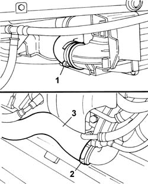

1048B14 air delivery pipe between turbo charger and heat exchanger - replace
- Path
- Procedures > 10 ENGINE > 1048 ENGINE AIR SUPPLY CIRCUIT > 1048B PRESSURE AIR CIRCUIT > 1048B14 air delivery pipe between turbo charger and heat exchanger - replace
- Kind
- repair procedure (removal / refitting; the operation number is the code)
- Applies to
- engines: 2.0 TB; all production periods
- Interactive page
- https://sloeber94.github.io/elrnDB-lThss/en/#/498890
Applies to: engines: 2.0 TB; all production periods
 Removing
Removing
 Refitting
RefittingSee in Op. 7040D50 ENGINE COMPARTMENT UPPER SOUND INSULATION SHIELD - R.R.
See in Op. 1048A21 AIR INLET HOSE FROM INTAKE TO FILTER - R.R.
See in Op. 1048A10 COMPLETE AIR FILTER -R.R.
See in Op. 1088E10 Radiator cooling FAN - R.R.
See in Op. 7055B54 PROTECTION/GUARD under engine - R.R.
See in Op. 4450B12 Front WHEELS (two) - R.R.
See in Op. 7055B42 FRONT WHEEL ARCH LINER (one), left or right - R.R.
- < R1 > (right side)
See in Op. 7055B64 Engine compartment DUST SEAL in front wheel arch (one), left or right - R.R.
- < R1 > (right side)
See in Op. 7210E10 FRONT BUMPER
1. Disconnect the air supply hose band from the heat exchanger.
2. Disconnect the air supply hose band from the turbocharger.
3. Remove the air supply hose between the turbocharger and the heat exchanger.

Applies to: engines: 2.0 TB; all production periods
Refitting
Removing- Connect the air supply hose to the heat exchanger and to the turbocharger.
See in Op. 7210E10 FRONT BUMPER
See in Op. 7055B64 Engine compartment DUST SEAL in front wheel arch (one), left or right - R.R.
- < R1 > (right side)
See in Op. 7055B42 FRONT WHEEL ARCH LINER (one), left or right - R.R.
- < R1 > (right side)
See in Op. 4450B12 Front WHEELS (two) - R.R.
See in Op. 7055B54 PROTECTION/GUARD under engine - R.R.
See in Op. 1088E10 Radiator cooling FAN - R.R.
See in Op. 1048A10 COMPLETE AIR FILTER -R.R.
See in Op. 1048A50 air inlet pipe to turbocharger - r + r
See in Op. 1048A21 AIR INLET HOSE FROM INTAKE TO FILTER - R.R.
See in Op. 7040D50 ENGINE COMPARTMENT UPPER SOUND INSULATION SHIELD - R.R.
Topics linked from this page (10)
- 1048A10 COMPLETE AIR FILTER -R.R.
- 1048A21 AIR INLET HOSE FROM INTAKE TO FILTER - R.R.
- 1048A50 air inlet pipe to turbocharger - r + r
- 1088E10 Radiator cooling FAN - R.R.
- 4450B12 Front WHEELS (two) - R.R.
- 7040D50 ENGINE COMPARTMENT UPPER SOUND INSULATION SHIELD - R.R.
- 7055B42 FRONT WHEEL ARCH LINER (one), left or right - R.R.
- 7055B54 PROTECTION/GUARD under engine - R.R.
- 7055B64 Engine compartment DUST SEAL in front wheel arch (one), left or right - R.R.
- 7210E10 FRONT BUMPER